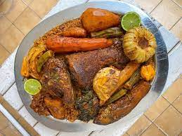

J'ai découvert le tiebou diene lors d'un voyage à Dakar... et depuis c'est un véritable plat traditionnel. Sur mon site, vous saurez tout sur le tiebou dieune !
Un tiebou dieune ? C'est ça :

Un tiebou dieune
Délicieux non ? Sur mon site, je vous présenterai :